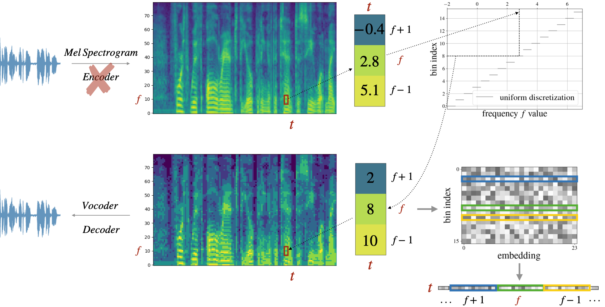
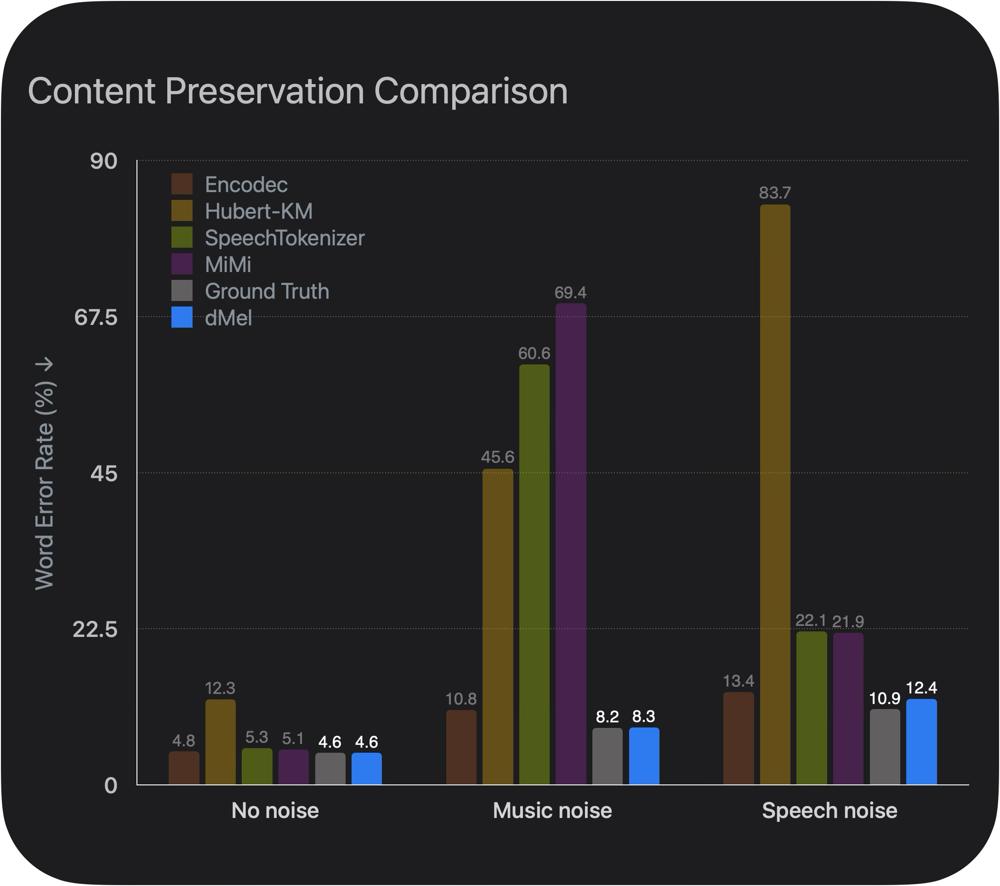
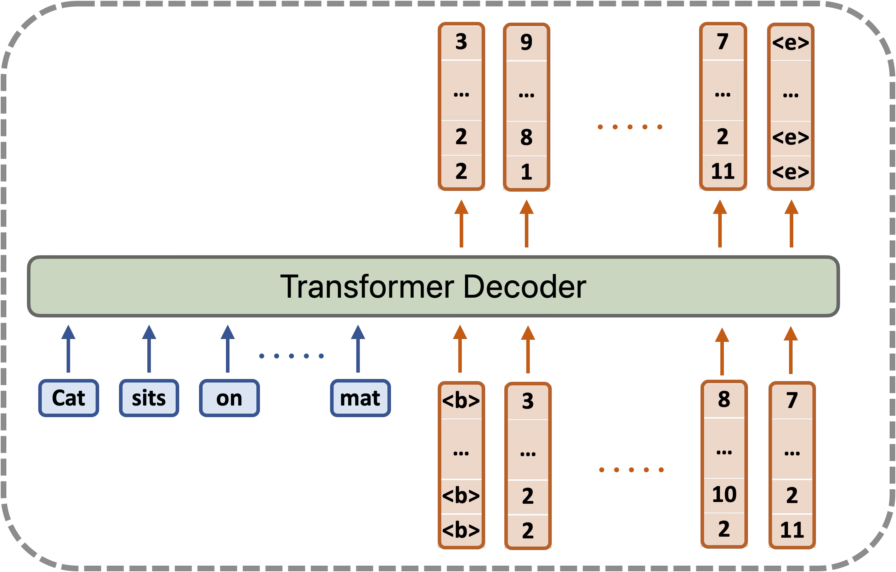

Abstract
Large language models have revolutionized natural language processing by leveraging self-supervised pretraining on vast textual data. Inspired by this success, researchers have investigated complex speech tokenization methods to discretize continuous speech signals, enabling the application of language modeling techniques to speech data. However, existing approaches face a fundamental tradeoff: they either model semantic (content) tokens, potentially losing critical acoustic information, or model acoustic tokens, risking the loss of semantic information. Although recent work (e.g. SpeechTokenizer, MiMi) shows combining tokens via distillation can balance both semantic and acoustic, model-based tokenizers not only complicate the system, but also face out-of-domain generalization issues (see Figure 2).
Here we demonstrate that discretizing mel-filterbank channels into discrete intensity bins produces a simple representation (dMel) that outperforms existing speech tokenization methods for speech reconstruction, particularly for out-of-domain audio. We then propose an LM-style transformer architecture for speech-text modeling, introducing two novel models: RichTTS for text-to-speech synthesis and RichASR for automatic speech recognition. The key innovation in our approach is the parallel encoding and decoding of speech token channels, replacing the conventional autoregressive plus non-autoregressive (AR+NAR) cascaded method.
We comprehensively evaluate various speech tokenization methods across three critical tasks: speech reconstruction, speech recognition, and speech synthesis. Our results demonstrate that dMel achieves superior performance while employing a significantly simplified architecture, thereby establishing a foundation for efficient and effective joint modeling of speech and text.
Figure 1. dMel tokenization and detokenization process.
Reconstruction Results
We show the reconstructed audio from different tokenizers under different noise conditions. The reconstructed audio samples are also evaluated by an ASR model to show the effectiveness of different tokenizers in preserving the speech content.
Figure 2. Comparison of the content preservation of different tokenizers under different noise conditions.
| Audio type | No noise (clean speech) | Music noise (speech with music background) | Speech noise (speech with speech background) |
|---|---|---|---|
| Ground Truth | |||
| GSLM-HuBERT-KM200 | |||
| SpeechTokenizer | |||
| Encodec | |||
| MiMi | |||
| Mel (LibriTTS Vocoder) | |||
| dMel (LibriTTS Vocoder) |
Table 1: Audio reconstruction using different speech tokenization methods with different type of audio inputs.
TLDR; Tokenization compresses data before you know what you want to do with it later. The manifold of the compressed codes can be quite curved: i) Downstream models may go off the manifold in weird ways; ii) Tokenization may not work for out-of-domain settings. Mel and dMel in contrary work well in both in-domain and out-of-domain settings.
RichTTS Results
Modeling speech and text sequences jointly is essential for a model to understand and generate both modalities. In this work, we apply a unified LM-style transformer model that takes speech and text tokens as input and generates the output tokens in the target modality, by proposing RichTTS and RichASR. Here we show RichTTS architecture and generation samples for illustration.
Figure 3. RichTTS, a decoder only LM style TTS model.
| dMel | GSLM-HuBERT-KM | SpeechTokenizer | |
|---|---|---|---|
| test-clean-121-127105-0000l | |||
| test-clean-1995-1837-0001 | |||
| test-clean-3729-6852-0038 | |||
| test-clean-4077-13751-0021 | |||
| test-clean-4507-16021-0020 | |||
| test-clean-7127-75947-0009 |
Table 2: The first 3 rows are normal length generation while the last 3 rows are longform generation.
TLDR; dMel is effective: decoder-only model trained with dMel achieves high performance on TTS task, including longform speech generation.
BibTeX
@article{bai2024dmel,
title={dmel: Speech tokenization made simple},
author={Bai, He and Likhomanenko, Tatiana and Zhang, Ruixiang and Gu, Zijin and Aldeneh, Zakaria and Jaitly, Navdeep},
journal={arXiv preprint arXiv:2407.15835},
year={2024}
}